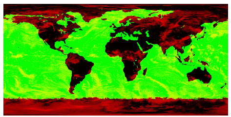

You can easily view a map image using IDL's IMAGE function. This topic shows how to display a simple map image, then explains how to add image registration so that you can warp the image to a map projection.
The following examples use an image of world cloud data. (This example data is available in the
examples/data
directory of your IDL installation.)

The code shown below creates the graphic shown above. You can copy the entire block and paste it into the IDL command line to run it.
; Define the data by reading the image into IDL.
; creating the clouds variable to hold the data.
READ_JPEG, FILEPATH('Clouds.jpg', SUBDIR=['examples','data']), clouds
; Use the IMAGE function to display the map image.
cloudmap = IMAGE(clouds)
The next step is to view the data as a map, which warps the image to the map projection you want to use. The following image is the same data warped to the Mollweide map projection:
To make IDL understand that this image is map data, you must register the image, defining the map boundaries, units, location, and dimensions of the image.
; Define the data by reading the image into IDL,
; creating the clouds variable to hold the data.
READ_JPEG, FILEPATH('Clouds.jpg', $
SUBDIR=['examples','data']), clouds
; Use the IMAGE function to display the map image.
cloudmap = IMAGE(clouds, $
LIMIT=[-90,-180,90,180], GRID_UNITS=2, $
IMAGE_LOCATION=[-180,-90], IMAGE_DIMENSIONS=[360,180],$
MAP_PROJECTION='Mollweide')